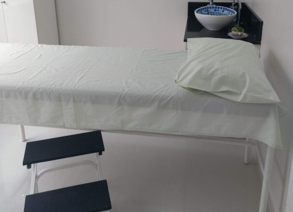

Conheça o método e técnicas Sandra Stoco
Nesta página vamos abordar os métodos e técnicas que usamos no nosso estúdio desde os príncipios do
pilates,fisioterapia e alguns outros de nossos trabalhos que são implementados junto a fisioterapia
As práticas adotadas em nossas aulas visam aprimorar a flexibilidade, a coordenação, a concentração e o condicionamento físico dos praticantes. Buscamos não apenas aperfeiçoar aspectos físicos, mas também proporcionar uma transformação integral, promovendo benefícios para o corpo e a mente, contribuindo assim para uma qualidade de vida aprimorada.
Em nosso estúdio, valorizamos as preferências e metas individuais de cada pessoa. Independentemente do seu nível atual de condicionamento, buscamos motivá-lo a superar seus próprios limites. Conte conosco para proporcionar um ambiente que estimule o seu progresso!
Pilates

Seguimos os princípios do Pilates tradicional como a base das nossas aulas. Utilizando os Aparelhos de Pilates, como Reformer, Cadillac, Step Chair e Ladder Barrel, desenvolvemos exercícios que promovem o alongamento completo do corpo, fortalecimento em conjunto com a respiração.
Movimentos precisos e flúidos, trabalham de maneira abrangente todo o corpo. Esse cuidado personalizado resulta em aulas completas e prazerosas, proporcionando uma sensação revigorante ao aluno!
Os ganhos do Pilates para a saúde e o bem-estar do praticante são vastos. Conforme expresso por Joseph Pilates, o fundador do método: "A boa forma física é o primeiro requisito para a felicidade."
Boa forma física é o primeiro requisito para a
felicidade.
Físioterapia

A Fisioterapia clássica é a base dos nossos tratamentos. Utilizando técnicas variadas e
equipamentos especializados, como ultrassom, eletroterapia e exercícios terapêuticos, promovemos
a recuperação e o fortalecimento do corpo. Através de abordagens personalizadas, visamos
estimular a mobilidade, reabilitar lesões e promover o bem-estar geral.
Exercícios específicos e adaptados, cuidadosamente ajustados para cada paciente, visam abordar de
forma abrangente as necessidades individuais. Trabalhamos para restaurar a funcionalidade,
fortalecer áreas específicas e promover uma respiração consciente.
Os benefícios da Fisioterapia para a saúde e bem-estar são vastos. Nas palavras de renomados profissionais da área: "A boa saúde física é a base essencial para uma vida plena e ativa". Em nosso compromisso com o cuidado personalizado, buscamos não apenas tratar sintomas, mas promover a saúde e o equilíbrio global de cada indivíduo.
Auriculoterapia

A Auriculoterapia autêntica é o alicerce dos nossos tratamentos. Ao aplicar estímulos precisos em pontos específicos da orelha, utilizando sementes ou agulhas, buscamos harmonizar as energias do corpo e promover o equilíbrio. Essa técnica milenar, inspirada na medicina tradicional chinesa, tem como objetivo estimular o corpo a se autorregular, proporcionando alívio de sintomas e favorecendo o bem-estar.
A precisão dos estímulos e a fluidez da técnica são cruciais para alcançar resultados eficazes. O resultado é uma experiência terapêutica completa, deixando o indivíduo revigorado e conectado consigo mesmo.
Agora que você já conhece o método que tal dar um olhada com funcionam as Aulas em nosso Estúdio?